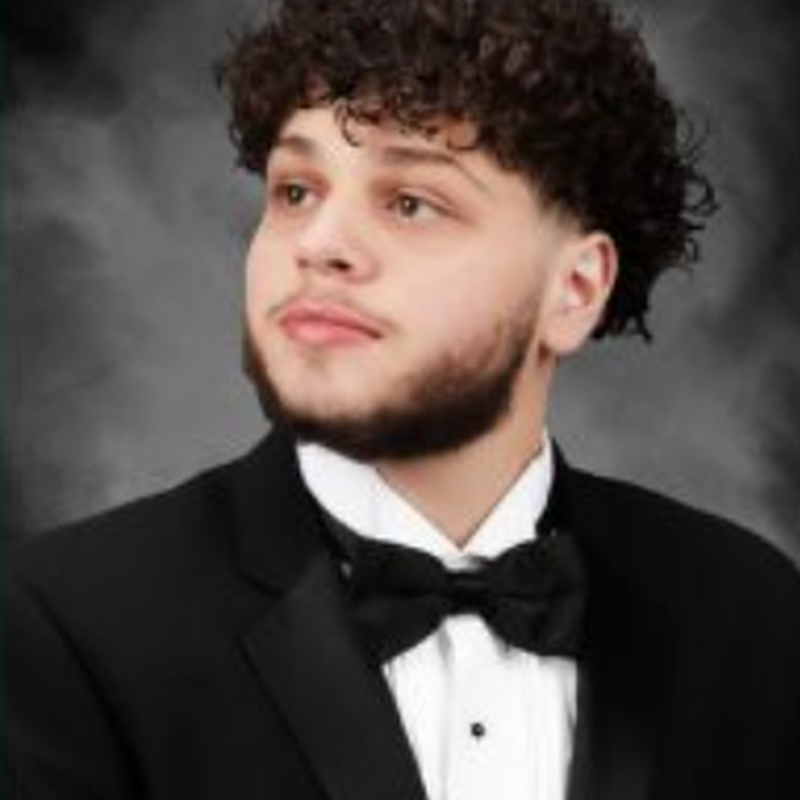

Mohammad Zoraiz
Qadam team
About Qadam
A person’s chance to move comfortably should not depend on how close they live to a fully equipped clinic.
We see a need for more accessible prosthetic care in refugee communities and other places where specialist services are difficult to reach. Qadam began as an opportunity to work on that need with care, openness, and a commitment to benefiting humanity.
01 / Our purpose
Our idea is to bring more of the fitting process into a portable, reusable kit. We hope that an approach designed around practical tools, repairable parts, and clinical oversight could widen access over time.
That hope is a reason to do the research, not a claim that the problem is solved. We need to test the geometry, materials, workflow, and safety process with qualified clinicians and the communities this work is meant to serve. We will share what we learn, including results that change our plans.
Read the open questions02 / The people
These are the people behind Qadam. We’re sharing our names and faces as we develop the idea in the open.
Qadam team

Qadam team

Qadam team

Qadam team
03 / Join the conversation
If you work in prosthetics, rehabilitation, engineering, or refugee health, we would value your perspective.